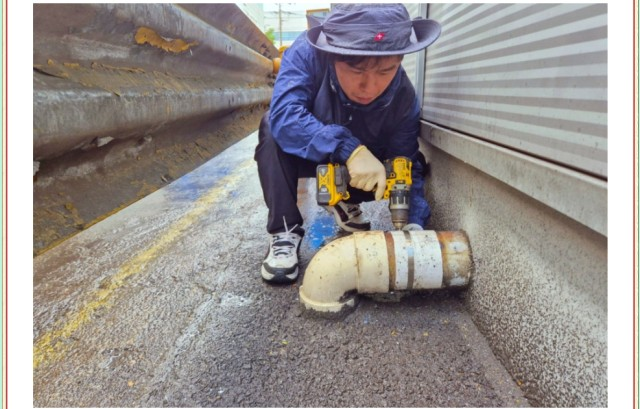

경기 남부 및 충남 북부 지역(평택, 안성, 천안, 오산, 화성) 사업장 설비 전문 고고고설비입니다. 이번 현장은 회사 건물 우수관(빗물 배수관) 주변의 지속적인 수위 상승 및 배수 지연 문제를 진단하고, 배관 내시경을 활용한 원인 파악부터 구배(경사) 보수까지 진행한 복합 시공 사례입니다.
1. 현장 진단 및 내시경 탐지
우수관 입구 주변으로 우수가 원활히 배출되지 못하고 고이는 현상이 확인되었습니다. 진단 구체화를 위해 최소한의 관창을 확보한 후 배관 전용 고화질 내시경 카메라를 삽입하여 내부 관로 상태를 정밀 점검했습니다.
2. 주요 막힘 원인 분석
- 퇴적 이물질 적체: 오랜 기간 유입된 낙엽, 토사, 비닐 및 포장재 찌꺼기가 관로 내부에서 막을 형성하여 통수 구간을 좁히고 있었습니다.
- 배관 물리적 손상: 노후화 및 외부 압력으로 인한 내벽 균열 및 마모 흔적이 발견되었으며, 해당 구간에서 배수 지연이 심화되는 상태였습니다.
- 배관 구배(경사) 불량: 특정 구간의 배관 경사도가 수평에 가깝거나 역구배 상태로 시공되어 있어 물이 자연 구배로 빠져나가지 못하고 정체되고 있었습니다.
3. 단계별 맞춤 복합 시공 과정
- 1단계 (관로 스케일링 및 이물질 준설): 배관 내부를 막고 있던 낙엽, 흙, 포장 쓰레기 등 퇴적물을 전용 장비로 물리적으로 스케일링하고 준설했습니다.
- 2단계 (손상 배관 부분 보수 및 교체): 균열과 손상이 확인된 구간은 매끈한 흐름이 유지되도록 부분 보수 및 관재 교체를 시행했습니다.
- 3단계 (배수 경사도 재조정): 정체 유량 발생을 방지하기 위해 경사가 부족한 구간의 고정 장치를 재설정하고 물리적 미세 조정을 통해 완벽한 배수 구배를 확보했습니다.
4. 통수 테스트 및 시공 완료
모든 보수 및 준설 작업 완료 후, 대량의 물을 유입시키는 통수 테스트를 실시했습니다. 정체되던 우수가 구배를 따라 신속하고 매끄럽게 배출되는 것을 내시경 및 외부 관찰을 통해 최종 검증했습니다.
5. 우수관 정기 관리 권장 사항
공장 및 회사 우수관은 폭우 시 건물 침수 피해로 이어질 수 있으므로 예방 관리가 핵심입니다.
- 계절별 루프드레인/집수정 청소: 낙엽이 많이 떨어지는 가을철 및 장마철 직전 집수정 주변 이물질 사전 제거
- 주기적인 관로 점검: 배관 구배 변화나 외력에 의한 손상 여부를 연 1회 이상 정기 점검 권장